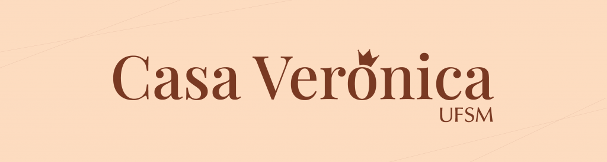
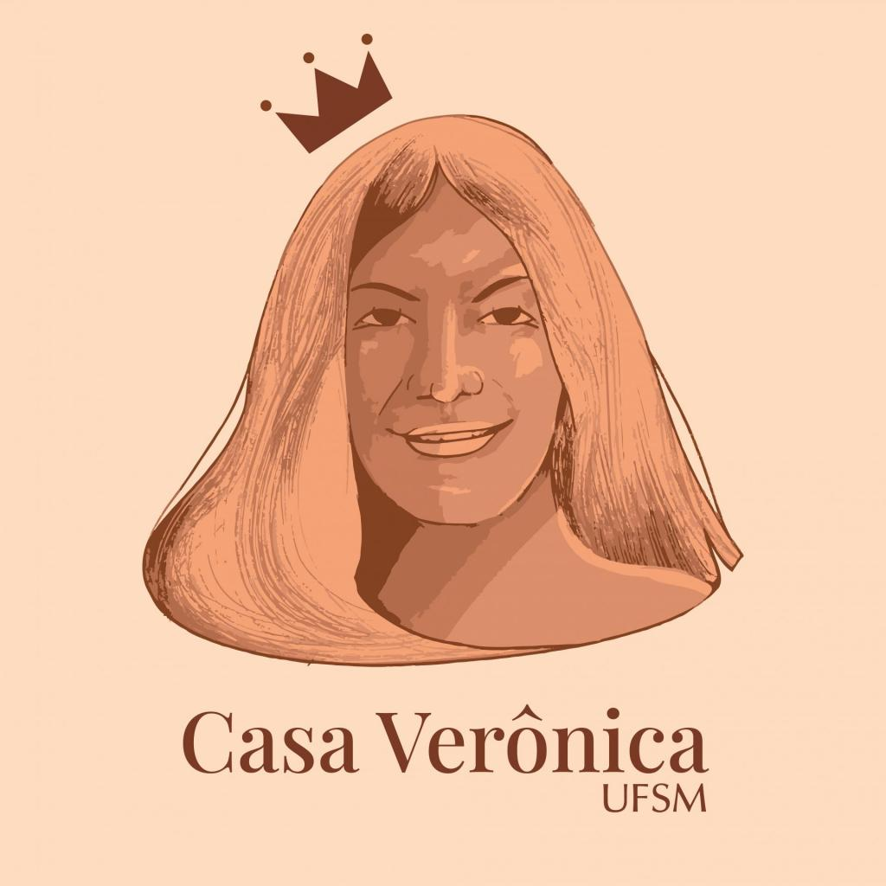

nosso projeto
resumo do nosso projeto aqui
Ilustração: Ada Freitas
resumo do nosso projeto aqui
Ilustração: Ada Freitas

A Casa Verônica presta homenagem à memória de Verônica Oliveira, cuja história simboliza a resistência e a busca por dignidade de pessoas trans e travestis no contexto acadêmico e social.
O espaço nasceu da necessidade urgente de institucionalizar políticas permanentes de equidade e proteção humana dentro dos campi da UFSM, transformando memórias de luta em ações concretas de inclusão.
O Espaço Multiprofissional Casa Verônica UFSM é dedicado ao acolhimento de pessoas em situação de violência de gênero e à promoção da igualdade de gênero nos campi da Instituição.

Ilustração: Noam Wurzel

Espaço de Apoio e Diálogo
O acolhimento é humanizado e contínuo, oferecendo suporte seguro para estudantes, docentes e servidores técnicos em situação de vulnerabilidade ou discriminação.
A equipe multiprofissional realiza atendimentos psicossociais, orientação jurídica e encaminhamentos às redes de saúde e assistência sociais públicas e universitárias. Além disso, promove atividades educativas como oficinas, cursos e rodas de conversa.
Diz respeito à percepção íntima e individual que cada pessoa tem sobre o seu próprio gênero, podendo ou não corresponder ao sexo atribuído no nascimento. Não depende de biologia ou de orientação sexual, sendo um pilar fundamental para o reconhecimento da autonomia e subjetividade humana.
A forma como cada indivíduo se manifesta publicamente no mundo — por meio de roupas, corte de cabelo, voz, postura e nome. A expressão de gênero é livre e não precisa estar presa a papéis ou expectativas sociais tradicionais.
Pessoas transgênero são aquelas cuja identidade de gênero difere do sexo atribuído ao nascer. Pessoas cisgênero são aquelas que se identificam com o sexo atribuído no nascimento. O respeito a ambas as vivências é essencial para combater a transfobia institucional.
Conceitos e Vivências de Gênero
Pluralidade e Interseccionalidade
A diversidade abrange as múltiplas formas de existir, incluindo identidades não binárias — pessoas que não se identificam exclusivamente com o gênero masculino nem com o feminino.
As experiências de gênero não ocorrem de forma isolada. A interseccionalidade analisa como o gênero se cruza com outros marcadores sociais — como raça, classe social, deficiência e orientação sexual —, gerando diferentes camadas de vulnerabilidade e exigindo redes de proteção e acolhimento mais abrangentes.
O uso do Nome Social é o direito de pessoas trans e travestis de serem reconhecidas e chamadas pelo nome com o qual se identificam. Garantido pelo Decreto Federal nº 8.727/2016 e por normativas da UFSM, seu uso não exige alteração prévia no registro civil.
Assegurar o nome social em diários de classe, crachás, e-mails institucionais e diplomas é uma medida central de combate à evasão escolar e ao constrangimento institucional.
A garantia de direitos às pessoas LGBTQIA+ no espaço Universitário promove a permanência acadêmica, a igualdade de oportunidades e o respeito à integridade física e psicológica de toda a comunidade.
Aprofunde seus conhecimentos através do material didático e das cartas interativas do jogo TransFormações. Acesse guias pedagógicos, referências acadêmicas e conteúdos para aplicação em oficinas.
Acessar Materiais